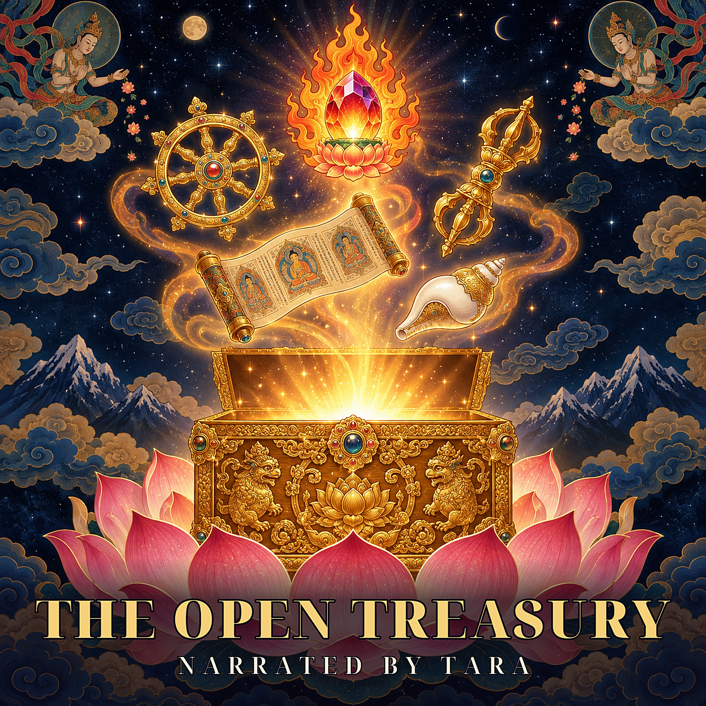

Zorba the Buddha: Osho, the Whole Story, Part 4 of 8: The Master Commentator
The whole story of Osho, told warts and all: the boy who refused to bow, the night in the garden, the master commentator on Tilopa, Shiva, Sosan, Kabir and Ikkyu, the synthesis he named Zorba the Buddha, and the Oregon catastrophe, 751 poisoned, the largest bioterror attack in US history, told straight from the record. Eight parts. Every quote verified against the published texts. Original commentary; short Osho excerpts quoted with attribution for commentary.
Sources for this part
- Tilopa commentary: "communion is possible, but communication, no"; "Don't seek and you will find it. The very seeking, the very effort, becomes a barrier, because the more you seek, the more the ego is strengthened: the seeker."; "I am also here to sing a song, but it can be given to you only when you are ready." — Tantra: The Supreme Understanding #1, oshoworld.com
- Ch2 verse "If one sees nought when staring into space... The clouds that wander through the sky have no roots, no home..." — Tantra: The Supreme Understanding #2, oshoworld.com/tantra-the-supreme-understanding-02
- Technique 1 "Radiant one, this experience may dawn between two breaths..." and Technique 2 "As breath turns from down to up..." — The Book of Secrets (technique texts), oshofriends.com/shiva_112_techniques
- Hsin Hsin Ming verses + "Sosan remained a wandering monk his whole life... They should remain rootless; there is no home for them except this whole universe." — Hsin Hsin Ming: The Book of Nothing #1 (Oct 1974), oshoworld.com/the-book-of-nothing-hsin-hsin-ming-01
- Ikkyu verse "A rest on the way back from the leaky road..." + "Ikkyu is not really a poet, he is a mystic." — Take It Easy Vol 1 #1 (Apr 1978), oshoworld.com/take-it-easy-vol-1-01
Sources as a plain file
Download MP3
Rights and editorial additions
Original commentary by Tara, narrated with the Aoede AI voice. Short Osho excerpts (one to four sentences) are quoted with attribution for commentary. The Osho International Foundation asserts rights in his works, so this episode carries no license and no support prompt. Kabir verses are Rabindranath Tagore's 1915 public-domain renderings. Quotes were checked against the published texts listed in the sources. AI work, machine-checked, not a human listen-through or expert review.